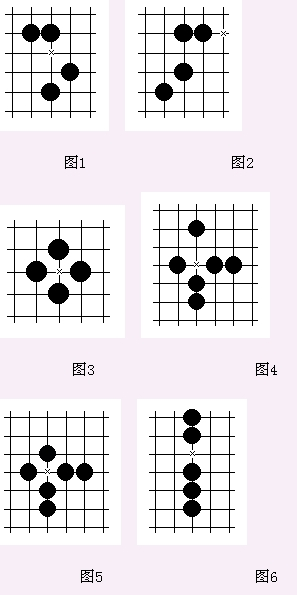
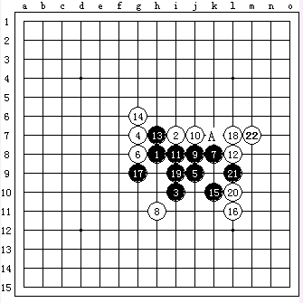
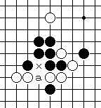

禁手，A点是禁手吗？
#1 禁手，A点是禁手吗？作者：莲子 发表时间：2006-1-12 22:31:28

图 1 、图 2 、图 3 中的 x 点为三、三禁手。
图 4 、图 5 中的 X 点为四、四禁手。
图 6 中的 X 点为长连禁手。
下图中的A点是禁手吗？
#2 Re:禁手，A点是禁手吗？作者：幽若 发表时间：2006-1-13 18:48:43
可能不是,不是我懂,是根据逻辑猜滴,如果是你就不发在这问了#3 假禁手1作者：莲子 发表时间：2006-1-15 15:11:18
这个17不是33禁，因为17后这个i7点是44禁，33禁的两个3必须是活3，而这里17后i7点是44禁，因此3和9子的这个3不是活3，所以17点不禁。#4 假禁手2作者：莲子 发表时间：2006-1-15 15:13:03
这里的A点不是33禁点，因为33禁的这个3是指活3，当黑下了A点后，B点就是44禁，因此这个A点3和5子的这个活3，7和9子的这个3因B点为44禁成了死3。#5 假禁手3作者：莲子 发表时间：2006-1-15 15:15:07
“a”这一点有可能被看作是三三。但是，由于竖跳三的下一手在x点将成四四禁手而不能走，这种竖三属于死三，所以a点不算三三。
#6 Re:禁手，A点是禁手吗？作者：幽若 发表时间：2006-1-16 7:58:48
噢,知道了,谢莲子老师,您是MM还是GG啊#7 Re:禁手，A点是禁手吗？作者：刀魂 发表时间：2008-11-3 8:30:59
 。。。。不是撒
。。。。不是撒